Default
Erntemaschinen
-
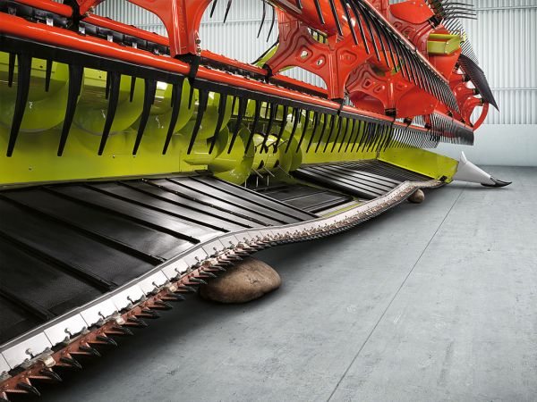 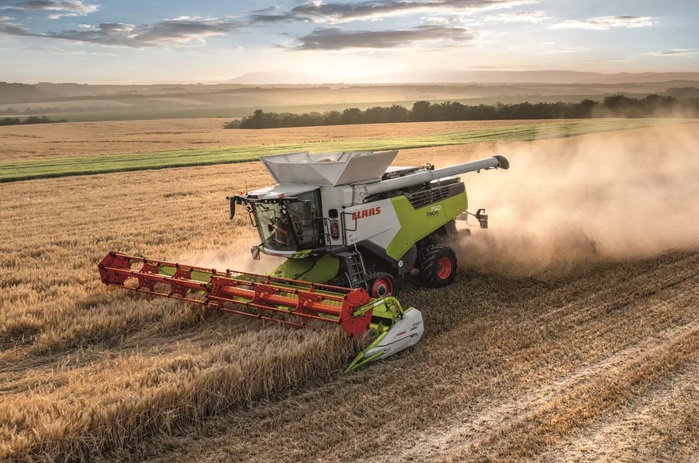 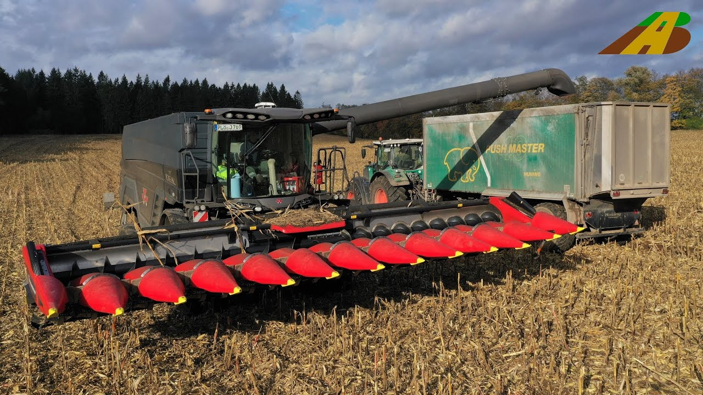Mähdrescher - Sie sind die ikonischsten unter den Erntemaschinen. Der Begriff beschrieb dabei ursprünglich die typischen Ernteaufsätze (Bild links) mit den Messern unten, die den Halm abschneiden, und der Dreschtrommel, die das geerntete Getreide in die Maschine befördert. Ebenfalls werden Mähdrescher mit Maisgebissen (Bild rechts) betrieben, um Körnermais und seltener Sonnenblumen zu ernten. Dabei wird, wie bei anderen Getreidesorten auch, über eine Reihe Rüttelsiebe und weitere Mechanismen das pure Korn von der restlichen Biomasse getrennt. Diese wird kleingehäckselt oder als Stroh hinter dem Drescher ausgeworfen.
-
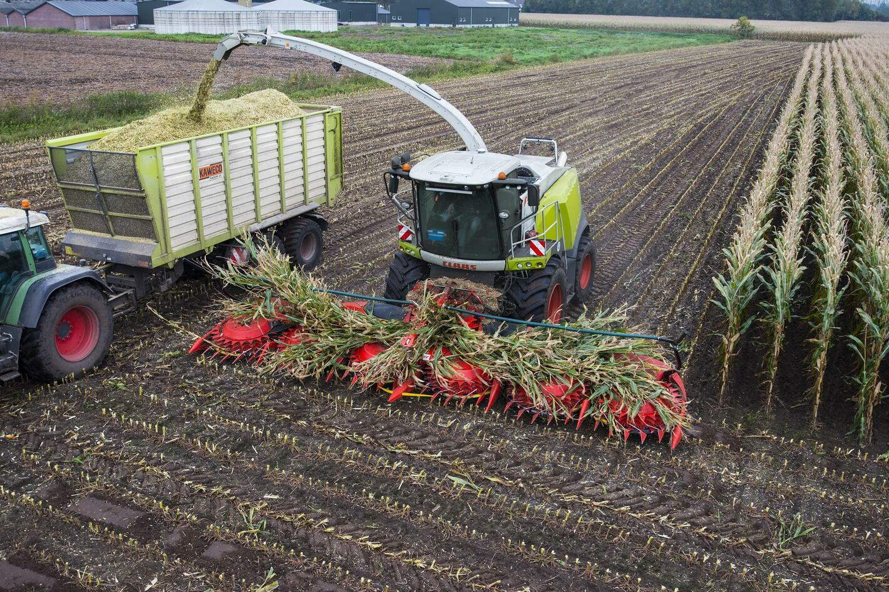 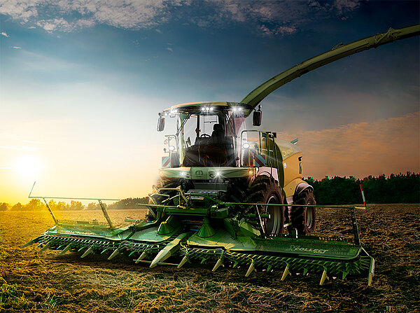 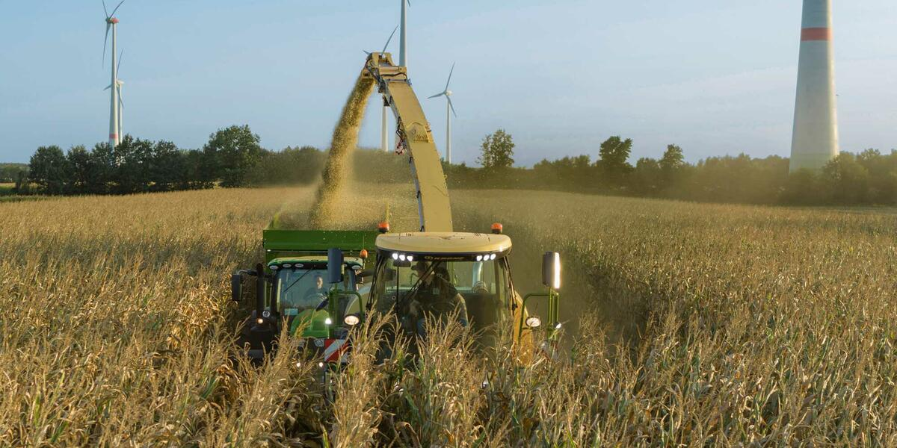Häcksler - Entgegen dem Drescher wird hier die ganze Pflanze verwertet. Mit dem Schneidwerk (Bild links) werden die Pflanzen abgeschnitten und mithilfe der Zahnräder und Förderschnecke in den Häcksler gesogen. Dort wird die Pflanze im Ganzen auf die gewünschte Größe gehäckselt und durch den so genannten Turm (Bild rechts) in einen Anhänger ausgeworfen. Beim Mais z.B. bedeutet es Blätter, Stamm sowie Kolben. Ferner werden diese Maschinen auch mit Gehölzen, wie Pappeln, fertig. Der Häcksler ist also ein zentrales Gerät bei der Ernte von Pflanzen zur Energiegewinnung.
-
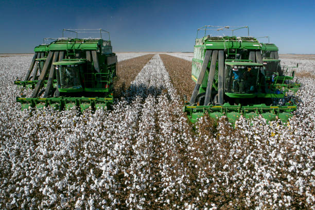 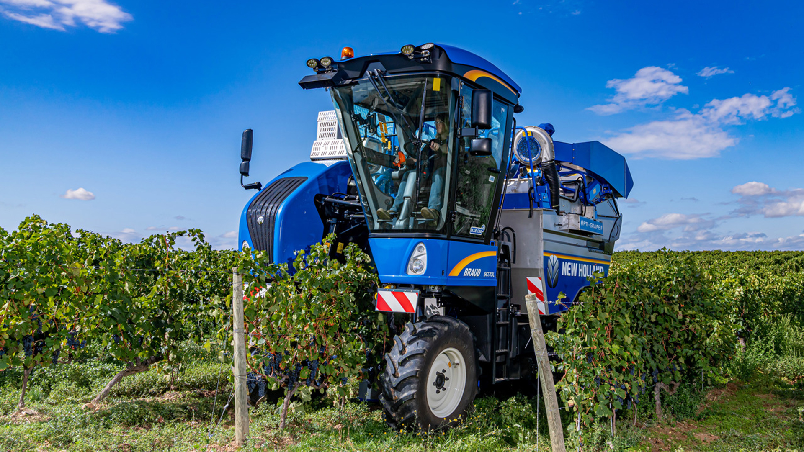Andere - Für einige Fruchtsorten werden spezialisierte Erntemaschinen eingesetzt. Für Baumwolle (Bild links) gibt es Teil- oder Vollernter mit Kompressionsmodul. Über Spiralschnecken wird die Pflanzenfaser gepflückt. Beim Weinanbau (Bild rechts) wird stattdessen ein Traubenvollernter über die Reihe geführt, um die Früchte „abzustreifen“.
Zugmaschinen & Anbaugeräte
-
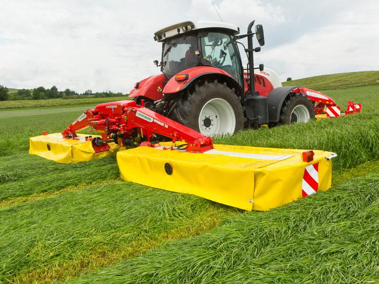 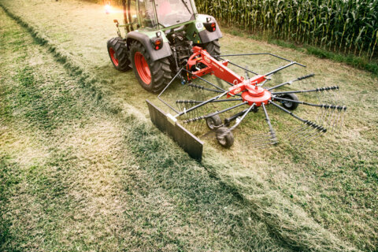Grünlandtechnik - Um Heu herzustellen oder Grassilage zu fermentieren ist es nötig Weiden zu bewirtschaften. Das Mähwerk (Bild links) funktioniert ähnlich wie ein Rasenmäher. Ist das die Biomasse abgeschnitten, kann man es mithilfe eines Schwaders (Bild Mitte) in Reihen ziehen. Eigentlich nur ein mechanisierter Rechen, wie man ihn aus dem Garten kennt. Will man stattdessen Heu trocknen, wendet man die Biomasse zuvor. Dies geschieht mit einem ähnlichen Gerät. Die gebildeten Reihen können nun entweder vom Boden aufgelesen werden, oder sie werden zu Ballen gepresst. Ballenpressen (Bild rechts) gibt es für Rund- und Quaderballen. Wird das frische Gras zu Ballen gepresst, wickelt man es meist mit Folie ab. Dies dient zum silieren (Haltbarmachung durch Fermentation).

-
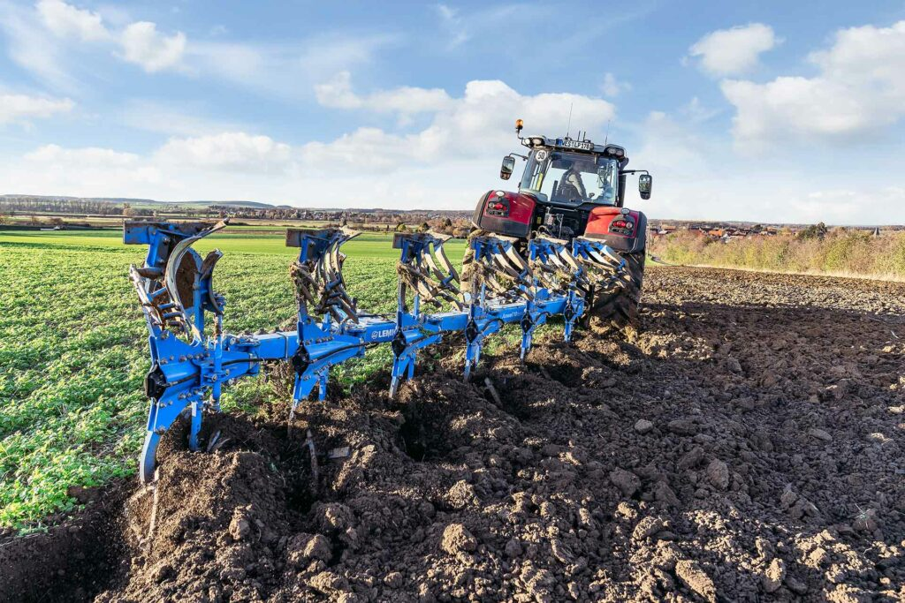 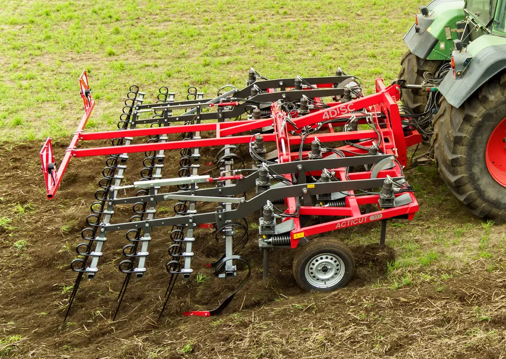 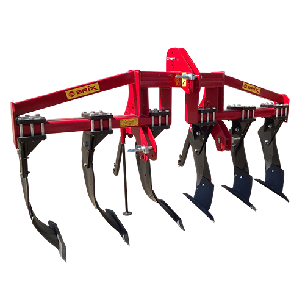Bodenbearbeitung - Je nach Ziel und Tiefe des zu bearbeitenden Ackers gibt es verschiedene Geräte. Das bekannteste davon ist der Pflug (Bild links). Er wälzt die Erde auf bis zu 40cm Tiefe um. Allerdings pflügen Landwirte den Acker nicht nach jeder Ernte. Wenn es ausreicht den Acker in geringerer Tiefe vorzubereiten, nutzt man einen Grubber (Bild Mitte). Dieser erreicht i.d.R. eine Tiefe von Xcm. Soll der Boden jedoch weiter unten gelockert und alte Wurzeln zerschnitten werden, kommt der Tiefenlockerer (Bild rechts) zum Einsatz.
-
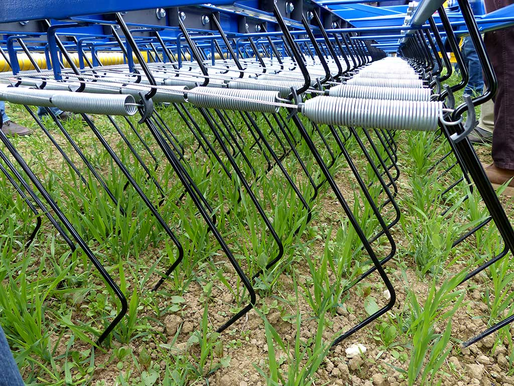 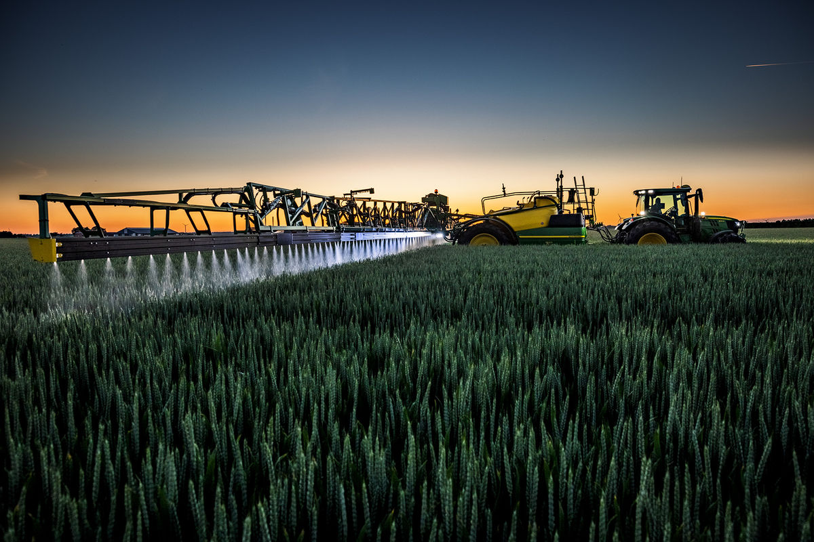Unkrautbekämpfung - Um Unkraut zu entfernen kann mechanisch mithilfe eines Striegels (Bild links) gearbeitet werden. Dies geht jedoch nur solange das Unkraut jung ist. Alternativ kommen Herbizide (Unkrautvernichtungsmittel) zum Einsatz. Diese werden mit einer Feldspritze (Bild Mitte) versprüht. Seit einiger Zeit entwickeln Landmaschinenhersteller ein Verfahren, welches Bilderkennung und Laser nutzt, um Unkraut zu versengen. Diese neue Methode wäre zuverlässig und umweltfreundlich.
-
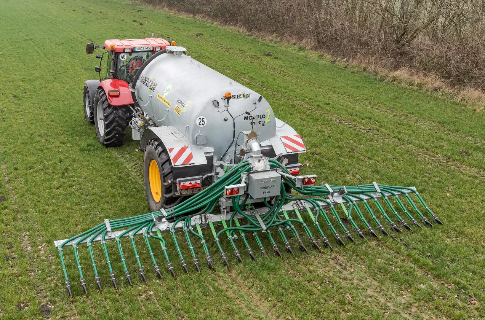 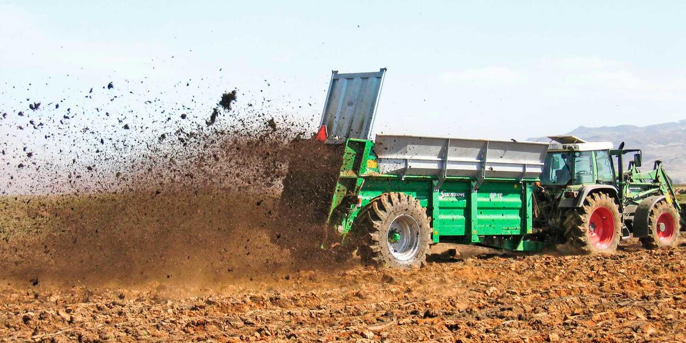 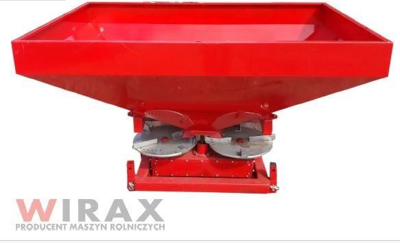Düngung - Bei Düngern wird zwischen Fest und Flüssig, sowie mineralisch oder tierischer Abstammung unterschieden. Bei letzterem gibt es Gülle, welche flüssig ist, und Mist. Für das Ausbringen der Gülle wird ein Güllefass (Bild links) benötigt. Es ist ein großer Tank samt Pumpe, Schlauch- und Auslasssystem. Mist wird aus einem Anhänger mit Streueranbau verteilt (Bild Mitte). Mithilfe der Feldspritze, die unter Unkrautbekämpfung zu sehen ist, wird Flüssigdünger ausgetragen. Fester Mineraldünger hingegen wird mit einem klassischen Granulatstreuer auf dem Acker verteilt (Bild rechts).
Stalltechnik
-
Melkstand - Anlage zur Milchgewinnung.

-
Futterroboter - Automatisierung in der Landwirtschaft spart dem Bauern viel Zeit. So auch mit den autonomen Robotern zur Fütterung.
-
Biogasanlage (BGA) - Dung und Biomasse werden hier zu Biomethan, optional in weiteren Schritten zu Strom und Wärme umgewandelt.